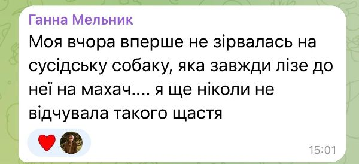
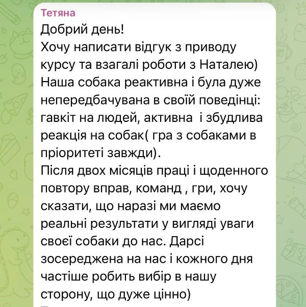
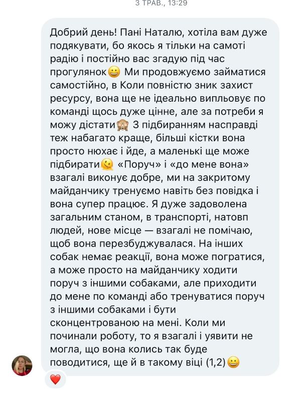
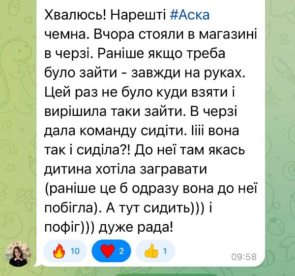
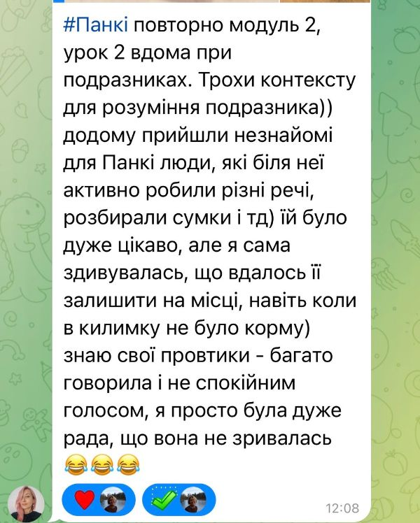
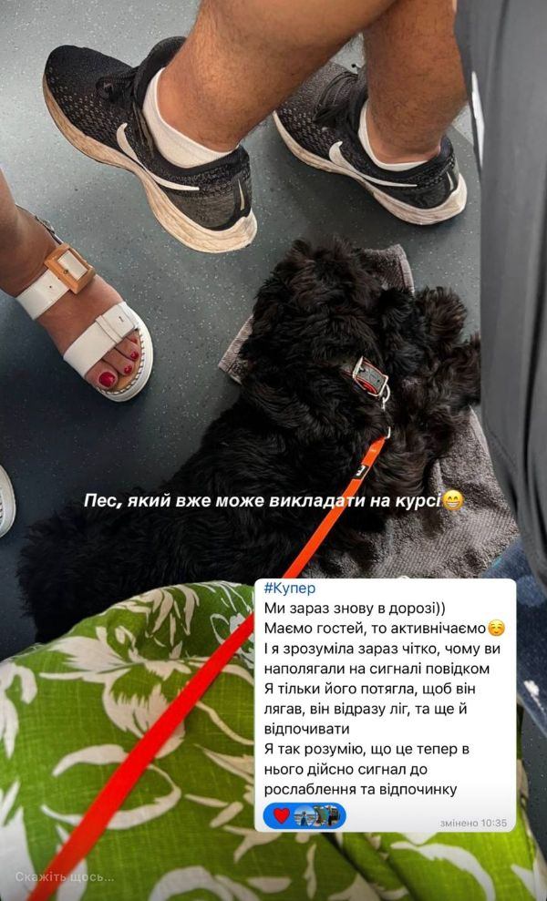
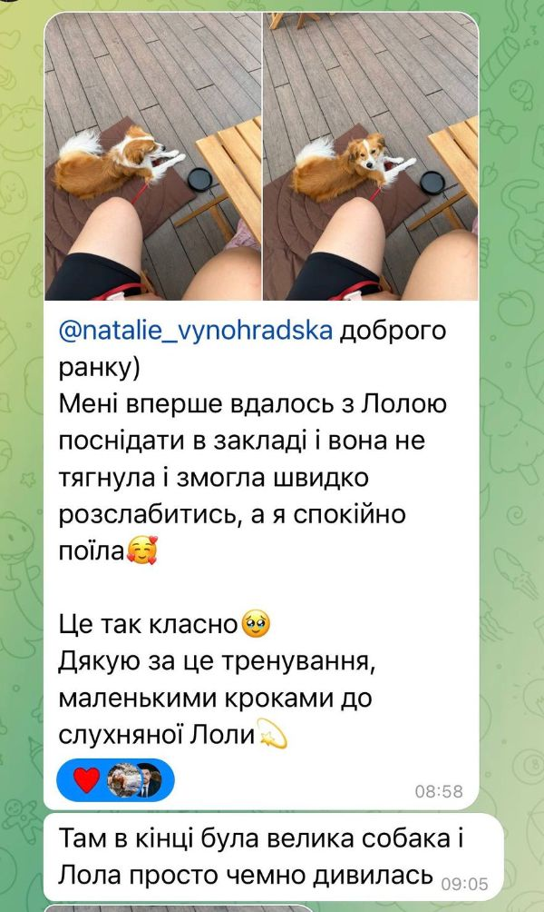

Ваше цуценя:
Цуценя кусає, бо так досліджує світ і скидає перезбудження. Пісяє повз, бо ще не вміє терпіти і не знає правила. Гризе, бо в нього міняються зуби.
Майже все, що вас виснажує, — нормальна поведінка для його віку. Йому просто ще ніхто не показав, як інакше.
У цей курс я зібрала те, що розповідаю власникам цуценят на перших консультаціях.
Покрокова система: кожен день — один короткий урок і одна вправа. Цеглинка за цеглинкою — від першої ночі вдома до року.
Учні курсу «Комфортний пес у публічних місцях»
«Вперше не зірвалась на сусідську собаку»

«Дарсі кожного дня частіше робить вибір в нашу сторону»

«Більші кістки вона просто нюхає і йде»

«Чемно сидів і чекав, навіть без смаколиків»
«Дала команду сидіти. І вона так і сиділа»

«Вдалось її залишити на місці при незнайомих людях»

«Він відразу ліг, та ще й відпочивати»

«Вперше вдалось посидіти в закладі, і вона не тягнула»

«Зайшов на ескалатор сам. Ще пару місяців тому я і не думала йти з ним у ТЦ»
Оплатіть курс «Цуценя без сліз» до кінця таймера — і заберіть разом з уроками: